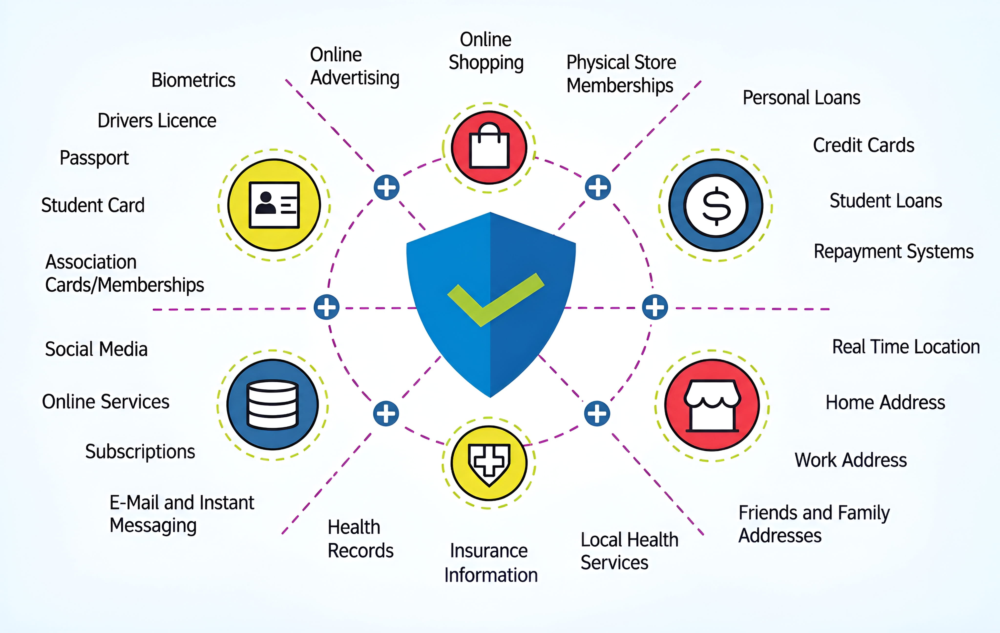
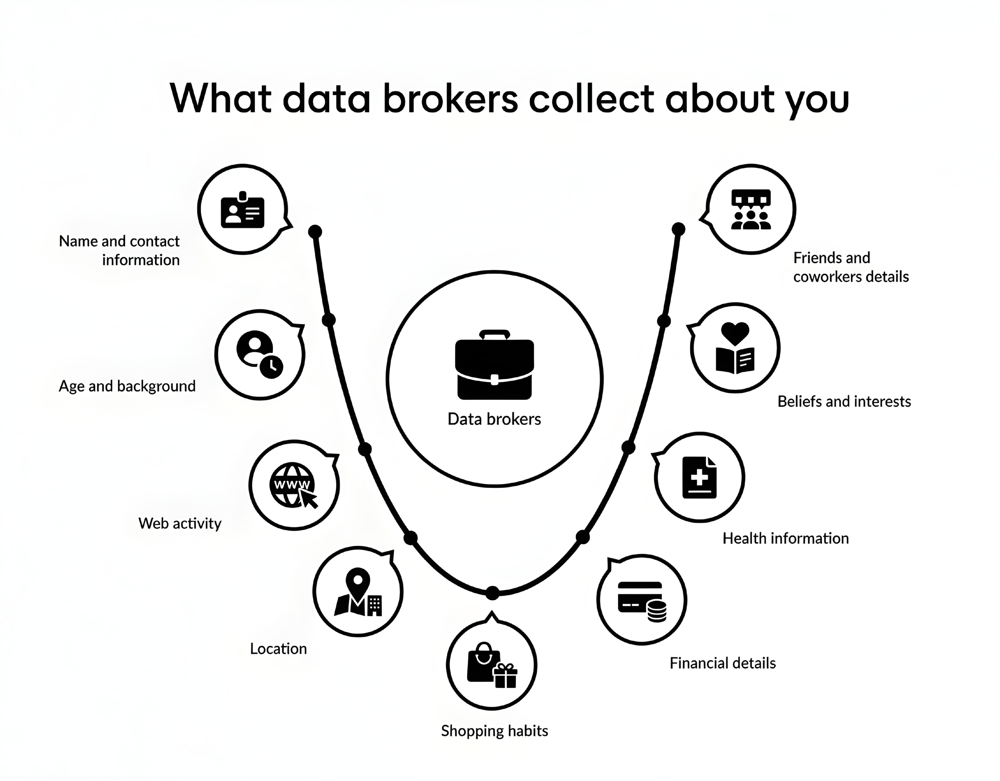
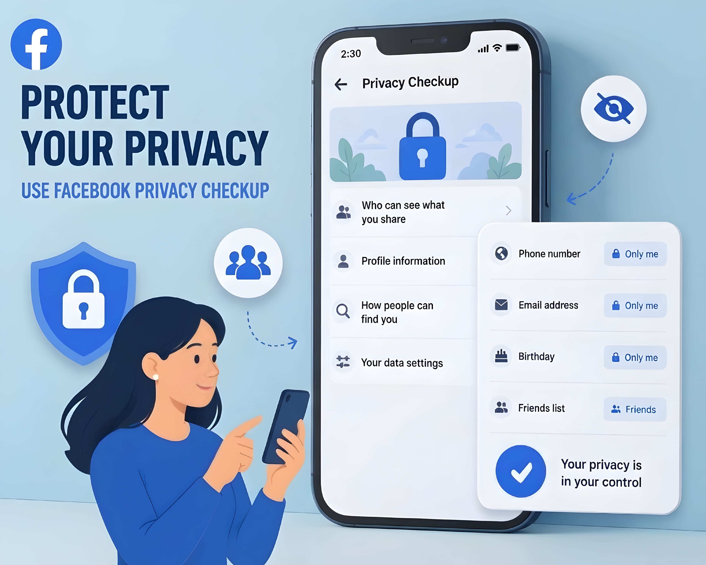
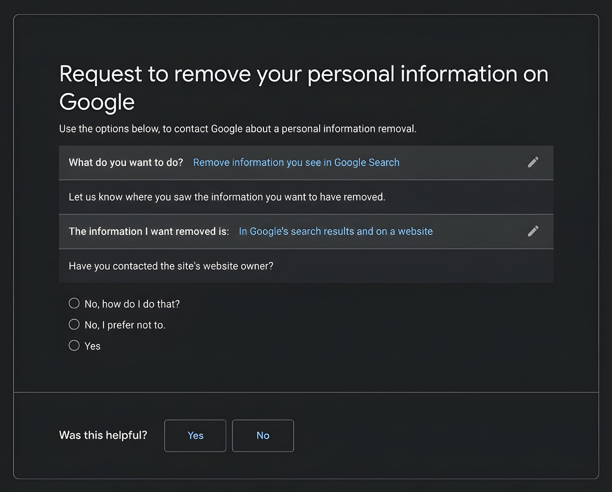

Have you ever searched for your name on Google? You may find an old social media profile, a photo someone tagged you in, a public work profile, or even a page that shows a phone number or an old address. It can feel surprising, especially when you do not remember sharing that information with the wider internet.
The truth is that your online presence is built from many small pieces. Some come from things you post yourself. Others come from apps, websites, public records, businesses, and people who share information about you. These pieces can sometimes be connected to form a much fuller picture than you expect.
In this guide, we will look at what may be available, how it gets there, how to check your own digital footprint, and what you can do to make personal details harder to find. You do not need to disappear from the internet. The goal is to understand what is public and make sensible choices about what stays that way.
What Is Your Online Footprint?
Your online footprint is the trail of information about you that exists on the internet. Think of it like footprints in wet sand. Every time you post a photo, create an account, write a review, or fill out a form, you may leave another mark.
There are two useful ways to understand this footprint:
- Active footprint: Information you choose to share, such as social media posts, comments, public photos, reviews, or a professional profile.
- Passive footprint: Information collected as you use websites, apps, and connected services. This may include device details, browsing activity, approximate location, and how you use a service.
The line is not always perfect. For example, you may actively install an app, but the app may collect certain usage information while you use it. That is why it helps to check both what you publish and what permissions or privacy choices you have accepted.
What Personal Information Can Be Online?
There is no single list that applies to everyone. What people can find depends on your country, the services you use, the privacy settings on your accounts, and whether other people or organisations have published information about you.
Here are common types of information that may appear online:
1. Basic Identity Details
Your full name, nickname, profile photo, age range, birthday, language, or the names of family members may appear in public profiles, posts, event pages, or other websites. A full date of birth can be especially useful to someone trying to guess account recovery answers or impersonate you, so there is usually no need to make it public.
2. Contact Information
An email address, phone number, business contact, or home address may appear on a public profile, an old directory listing, a document, or a people-search website. Even an email address that looks harmless can help someone connect several accounts to the same person.
3. Photos, Videos, and Location Clues
Photos can reveal more than the people in them. A picture may show a school badge, workplace sign, street name, house number, vehicle plate, or a regular place you visit. A caption such as “home again” or a public check-in can also reveal a routine.
4. Work, Education, and Interests
Public resumes, professional networking pages, school announcements, competition results, and community posts can reveal where you studied, where you work, what you do, and who you know. These details are not automatically dangerous, but they can make a profile easier to identify.
5. Activity and Device Information
Websites and apps may collect information such as pages you visit, searches within a service, clicks, device type, browser details, and approximate location. The exact information depends on the service and the choices available in its privacy settings.
6. Public Records and Other Published Information
Depending on local laws and the type of record, some government or official records may be accessible online. News articles, public notices, business registrations, court records, and event results can also mention people by name. A search engine may make these pages easier to discover.

How Does Your Information Get There?
You might be thinking, “I am careful about what I post. So how could there be much information about me?” That is a fair question. The important thing to remember is that you are not the only person or organisation that can add information about you.
Social Media and Public Profiles
A public profile can show your name, photos, interests, friends, work, and places you visit. Even if your own account is private, another person may post a group photo or mention you in a public comment. Review tags, mentions, old posts, and who can see your profile.
Websites, Apps, and Online Forms
Shopping sites, news websites, games, travel services, and other apps may ask for details when you create an account or use a feature. Some services also use cookies or similar technologies to remember activity and measure how people use their pages. Read the privacy notice before sharing information you do not think the service needs.
Accounts You Created Years Ago
Old forums, photo-sharing sites, blogs, game accounts, and forgotten profiles can remain online long after you stop using them. You may have used the same username or profile picture on several services, making it easier for someone to connect those accounts.
Other People and Organisations
Friends can tag you in photos. Employers may publish staff profiles. Schools, clubs, event organisers, or local news sites may publish results and announcements. Sometimes the information is shared with good intentions, but you may still prefer to keep it private.
What Are Data Brokers and People-Search Sites?
This is one part of online privacy that many people do not know about. Some companies collect information from different sources, combine it, and share or sell it to other organisations. These companies are often called data brokers.
The US Federal Trade Commission explains that people-search websites are a type of data broker. They may gather information from other brokers, public social media profiles, and public records, then compile it into reports. Depending on the site and the information available, a report may include names, previous addresses, possible relatives, or other details.
Imagine that one website has your name, another has an old address, and a third has a public profile with your workplace. A people-search service may be able to bring separate details together. This does not mean every site has every detail about every person. It means that information shared in different places can sometimes be combined.

The FTC's guide explains how people-search sites work and how consumers can ask some of them to stop selling their information. The available rights and opt-out process depend on the website and the laws that apply where you live. See the FTC guide to people-search sites.
How to Check What Is Available About You
You do not need special software to make a first check. Start with a normal search engine and your own accounts. The aim is to find public information, not to enter private details into random websites.
Step 1: Search for Your Name
- Open a search engine you trust.
- Search for your full name in quotation marks, such as
"Alex Morgan". Use your own name, not this example. - If the name is common, add a city, profession, school, or organisation that is already public and helps separate results.
- Look through the results and open only websites you recognise or consider trustworthy.
Try a few versions of your name, such as a middle name, nickname, or common spelling variation. Do not publish your home address or identity number just to see whether a website has it.
Step 2: Check Your Usernames and Public Profiles
Search for usernames you have used on public websites. Review social media profiles, old posts, public comments, profile photos, and tagged content. Check the profile while logged out, if possible, to understand what a person who is not your friend can see.
Step 3: Review App and Account Privacy Settings
Open the privacy or security settings for the services you use most. Look for options that control profile visibility, search visibility, location sharing, activity history, ad personalisation, and data permissions. The names of these settings vary from one service to another.
Step 4: Check for Old Accounts
Think about services you used in the past: old email providers, forums, shopping accounts, games, blogs, and photo sites. If you still have access, sign in through the official website and remove details you no longer need. If you cannot access an account, use the service's official account-recovery process.
Step 5: Use Google's “Results about you” Tool Where Available
Google offers a feature called Results about you that can help people find certain personal details, such as a phone number, home address, or email address, in Google Search results and request removal when the result meets Google's policies.
You can read the current instructions in Google's Results about you help page. Availability and supported information can vary by market and account. If the feature is not available to you, you can still review search results manually and use Google's personal information removal request guidance where applicable.
How to Reduce Your Online Exposure
Once you know what is visible, decide what you want to change. You do not have to delete every account or stop using social media. A few careful changes can make a real difference.
1. Make Personal Profiles Private
Review who can see your posts, photos, friends list, birthday, phone number, and email address. If a platform lets people find you using your phone number or email, decide whether you need that option enabled. Remember that privacy settings do not control screenshots or copies already saved by other people.

2. Remove Details You Do Not Need to Share
Consider removing your full birthday, home address, personal phone number, daily routine, and other details from public profiles. For a business or professional profile, use a work email or business contact method when that is suitable.
3. Review Location Permissions
Check which apps can access your location and whether they need it all the time. A map app may need location while you are using it, while a simple photo editor may not. You can usually review these permissions in your phone's privacy settings. Also check location sharing inside social and messaging apps.
4. Secure Your Important Accounts
Use a unique password for each important account. A password manager can help you create and store them. Turn on multi-factor authentication when it is available, especially for your email, financial, and social accounts. Your email account deserves special attention because it is often used to reset passwords for other services.
5. Delete or Close Accounts You No Longer Use
If you no longer need an account, check whether the service offers a proper deletion option. Download anything you want to keep first. Removing an app from your phone does not usually delete the account or the information held by the service.
6. Be Careful With Quizzes, Giveaways, and Online Forms
Before entering your details, ask yourself whether the website really needs them. A random quiz does not need your home address. A giveaway that asks for unnecessary identity or payment details deserves extra caution. Avoid sharing sensitive information with websites you cannot verify.
7. Ask Websites to Remove Information
If a website publishes your personal details, look for its privacy contact, removal request form, or support page. Explain which page contains the information and what you want removed. Keep a copy of your request. Do not send extra identity documents unless the site has a legitimate reason and you have verified that you are dealing with the real service.
What Happens When You Remove Information?
This is an important point: removing a search result is not always the same as removing the original information from the internet.
For example, Google may approve a request to remove a result that shows certain personal contact details. That can make the page harder to find through Google Search, but the information may still exist on the website that published it. Google recommends contacting the website owner if you want the information removed from its source.
Here is a simple way to think about it:
- Search result removal: A link may stop appearing in certain search results.
- Source removal: The website that hosts the information deletes or changes the page.
- Copies and archives: Other sites, screenshots, or saved copies may still exist.

Removal is not guaranteed. A website may refuse a request, may be required to keep certain records, or may follow different rules depending on the country. If the information is being used to threaten, stalk, or impersonate you, keep evidence and consider contacting the platform, relevant authorities, or a qualified local support organisation.
What If Sensitive Information Is Exposed?
Finding your name or an old profile online does not automatically mean someone has stolen your identity. First, work out what is exposed and where it appears. Then choose the response that matches the risk.
- If a phone number or email address is public: Expect possible spam or unwanted messages. Tighten account discovery settings and be careful with unexpected links or verification codes.
- If a password may have been exposed: Change it on the affected service and anywhere else you reused it. Secure your email account and turn on multi-factor authentication.
- If financial or identity details are exposed: Contact the relevant bank, card provider, identity authority, or service through its official website or phone number. Ask what protective steps are available in your country.
- If someone is threatening or harassing you: Save evidence, report the account or content to the platform, and seek help from appropriate local authorities or support services if you feel unsafe.
Do not pay an unknown person who promises to erase all your information. Be cautious of messages claiming that your data has been found and asking you to click a link, install software, or pay immediately. Scammers sometimes use privacy fears to create urgency.
Frequently Asked Questions
Can someone find my address by searching my name?
Sometimes, but not always. An address may appear in public records, old listings, or people-search websites, depending on the country and the information those services collect. Search results are different for every person.
Does using private social media accounts hide everything about me?
No. Private settings limit who can see certain content, but they do not remove information already published elsewhere. Other people may also share photos or details about you from their own public accounts.
Can I remove all my personal information from the internet?
Usually, you cannot guarantee that every copy will disappear. You can remove information from accounts you control, ask websites to delete details, and request eligible search-result removals. Copies, archives, and public records may remain.
Does Google remove personal information from the original website?
No. Google can remove eligible links from Google Search, but that does not automatically delete the page on the website hosting it. Contact the website owner if you want the original page changed or removed.
Are data brokers the same as hackers?
No. Data brokers collect and combine information, often from public or commercial sources. Hackers gain access to systems or accounts without permission. Both can create privacy risks, but they are different activities.
Should I use a website that promises to scan my entire digital footprint?
Be careful before giving such a service your full name, phone number, address, or identity details. Check who operates it, what it collects, how it uses your information, and whether you can delete your data. You can do a useful first review with ordinary search and account privacy settings.
How often should I check my online presence?
There is no fixed schedule that suits everyone. A quick review every few months, and whenever you change jobs, move, or create important accounts, can help you notice unexpected public information.
Final Thoughts
So, how much of your personal information is available online? The honest answer is: it depends. Some people have only a small public footprint. Others have details spread across social media, old accounts, public records, business pages, and data-broker websites. There is no reliable way to know the full picture without checking.
Start with your name, review your public profiles, and check the privacy settings on the accounts you use most. Remove details you do not need to share, secure important accounts, and contact websites when you find information you want taken down.
You do not need to stop using the internet to protect your privacy. You just need to be more aware of what you share, what services collect, and which parts of your life you want to keep private.